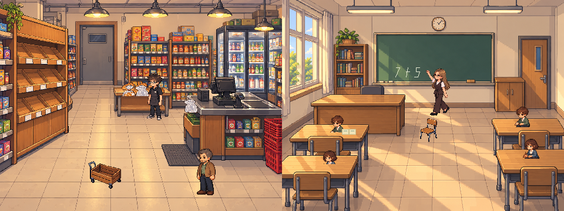

Вова Магазин
Настя Класс
Магазин и класс
У каждого своё утро. Выберите действие, когда оно появится.
Утро
Вова и Настя возвращаются к своим делам.
Магазин слева, класс справа. Игра идёт горизонтально.

Для игры включите JavaScript.
Первый фрагмент авторской истории: S02 и S03. Сообщения сохранены дословно. Остальные сцены ещё в разработке.
Пробел — пауза. Escape — закрыть меню.